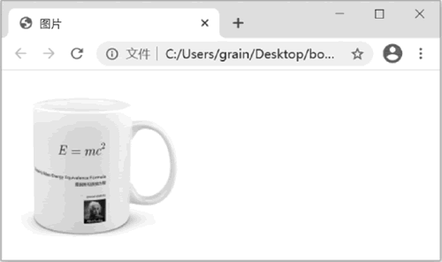
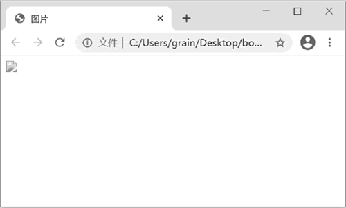
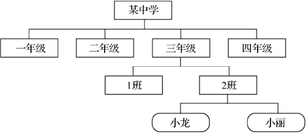
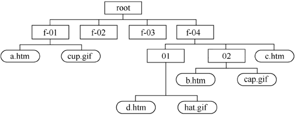
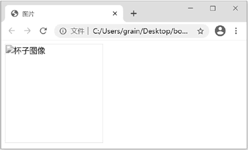

首页 > 编程笔记
HTML <img>标签：插入图片
图片是网页中不可缺少的元素，巧妙地在网页中使用图片可以为网页增色不少。
本节首先介绍网页中常用的三种图片格式，然后介绍如何在网页中插入图片，以及设置图片的样式和插入的位置。读完之后，读者可以制作简单的图文网页，并根据自己的喜好制作出不同的图片效果。
JPG 格式为静态图像压缩标准格式，它为摄影图片提供了一种标准的有损压缩方案。它可以保留大约1670万种颜色，对于照片类型的图片，通常选择 JPG 格式保存。在图像处理软件中可以为 JPG 格式的图片选择适当的压缩率，以实现清晰度和文件大小的平衡。
GIF 格式只支持 256 色以内的图片，如果用 GIF 格式保存颜色丰富的照片类型图片，效果就会很差，它只适合保存卡通类或以线条为主的图片。GIF 格式的优点是支持透明色，可以使图像浮现在背景之上。
PNG 格式晚于 JPG 格式和 GIF 格式出现，它兼具二者的优点。当将图片设置为 256 色时，PNG 格式可以得到和GIF格式相同的效果。PNG 格式也可以实现无损的高清晰度压缩，而且它拥有 alpha 透明（即半透明）的能力，但 PNG 格式不支持有损压缩，它用的是固定的 LZ77 压缩算法，不能设置压缩率。
总体来说，PNG 是目前最流行的网页图片格式，读者在具体使用时还有很多技巧和知识需要了解。由于它不属于 HTML 的范围，因此这里不再深入介绍，有兴趣的读者可以查找一些相关资料。
首先是图片的选用。图片要与网页风格贴近，最好是自己进行制作，这样可以完全体现网页的设计意图。如果不能自己制作，则应对所选择的图片进行适当的修改和加工，并且要注意图片的版权问题。
另外，图片的色调要尽量保持统一，不要过于花哨。选择的图片不应过大，一般来说，图片的大小是文档大小的几百倍甚至几千倍。如果发现 HTML 文件过大，往往是图片造成的。这样既不利于上传网页，也不利于浏览者进行浏览。
其次是颜色的选择。一般在制作网页的时候都会选用一种主色调来体现网页的风格，再以其他颜色加以辅助。一旦选定了某种颜色作为主色调，就要一直保持下去，否则会让人感到眼花缭乱，无所适从。另外，在选择其他颜色来配合主色调的时候，不要喧宾夺主。
例如，当选用了灰色作为主色调的时候，在其他颜色的选用上就要尽量不用或者少用明色调，否则就会非常刺眼。当然，如果需要的正是这样的效果就另当别论了。
<img> 标签的作用就是在网页中插入图片，其中 src 属性是该标签的必要属性，该属性指定导入图片的保存位置和名称。在这里，插入的图片与HTML文件是处于同一目录下的，如果不处于同一目录下，就必须采用路径的方式来指定图片的位置。
通过这个实验可以知道，改变了“cup.png”图片的位置，而 HTML 文件中的代码没有做任何修改，引用的还是同样的图片，浏览器就找不到这个图片了。由于浏览器默认的目录是 HTML 文件所处的目录，因此如果图片和 HTML 文件处于同一目录，浏览器就可以找到图片并正常显示。在上面的实例中，因为浏览器并不知道图片的位置已经改变，所以它仍然会到原来的位置去找这个图片，但图片已经不能正常显示了。这时需要通过设置“路径”来帮助浏览器找到相应的图片。
为了更好地说明“路径”这个非常重要的概念，这里举一个生活中的实例。计算机中的文件都是按照层次结构保存在一级一级的文件夹中的，这就好比学校分为若干个年级，每个年级又分为若干个班级。例如在三年级 2 班中，有两个学生分别叫“小龙”和“小丽”，如下图所示。
如果小龙要找小丽，那么不需要额外的说明，在 2 班内部就可以找到她。如果是同年级的另一个班的学生要找小丽，那么除了姓名之外，还需要说明是“2班的小丽”。再进一步，如果是另一个年级的学生要找小丽，就应该说明是“三年级2班的小丽”。
实际上，这就是路径的概念。在上面的网页中，由于 HTML 文件和图片都在同一个文件夹中，这就好像是在同一个班级中的两个同学，因此不需要给出额外的路径信息。如果它们不在同一个文件夹中，就必须给出足够的路径信息才能找到它们。
对于路径信息的说明，通常分为以下两种情况。
网站中的路径与此类似，通常可以分为以下两种情况。
下面举几个实例来说明路径的使用方法，文件系统结构如下图所示。
图中的矩形表示文件夹，圆角矩形表示文件，包括 HTML 文件和图片。
当引用的图片是其他网站上的某一个图片时，就无法使用相对路径了。这时可以直接使用图片的 URL 作为地址。
例如下面的代码：
要特别说明的是，如果使用其他网站的图片，则必须遵守知识产权的相关规定，不要侵犯他人的知识产权。
在实际制作网页时，如果出现图片不能正常显示的情况，往往是路径设置出现了问题。这对于初学者来说是一个令人头疼的问题，不过，只要真正理解了路径的概念和含义，问题就会迎刃而解。
这需要使用 <img> 标签的 alt 属性来实现。例如下面的代码：
alt 属性在过去网速比较慢的时候，主要作用是使看不到图片的浏览者能够了解图片内容。随着互联网的发展，现在因为网速显示不了图片的情况已经很少见了，alt 属性也有了新的作用。谷歌和百度等搜索引擎在收录页面的时候，会通过 alt 属性的属性值来分析网页的内容。因此，如果在制作网页的时候能够为图片配备清晰明确的替换文本，就可以帮助搜索引擎更好地理解网页内容，从而更有利于搜索引擎的优化，让更多人通过搜索引擎找到这个网页。
本节首先介绍网页中常用的三种图片格式，然后介绍如何在网页中插入图片，以及设置图片的样式和插入的位置。读完之后，读者可以制作简单的图文网页，并根据自己的喜好制作出不同的图片效果。
网页中的图片格式
目前在网页中使用的图片格式主要有 JPG、GIF 和 PNG 这 3 种。JPG 格式为静态图像压缩标准格式，它为摄影图片提供了一种标准的有损压缩方案。它可以保留大约1670万种颜色，对于照片类型的图片，通常选择 JPG 格式保存。在图像处理软件中可以为 JPG 格式的图片选择适当的压缩率，以实现清晰度和文件大小的平衡。
GIF 格式只支持 256 色以内的图片，如果用 GIF 格式保存颜色丰富的照片类型图片，效果就会很差，它只适合保存卡通类或以线条为主的图片。GIF 格式的优点是支持透明色，可以使图像浮现在背景之上。
PNG 格式晚于 JPG 格式和 GIF 格式出现，它兼具二者的优点。当将图片设置为 256 色时，PNG 格式可以得到和GIF格式相同的效果。PNG 格式也可以实现无损的高清晰度压缩，而且它拥有 alpha 透明（即半透明）的能力，但 PNG 格式不支持有损压缩，它用的是固定的 LZ77 压缩算法，不能设置压缩率。
总体来说，PNG 是目前最流行的网页图片格式，读者在具体使用时还有很多技巧和知识需要了解。由于它不属于 HTML 的范围，因此这里不再深入介绍，有兴趣的读者可以查找一些相关资料。
在网页中插入图片
在网页上使用图片，从视觉效果上能使网页充满生机，并且能直观、巧妙地表达出网页的主题，这样的效果仅靠文字是很难得到的。一个有着精美图片的网页能激发浏览者对网页的兴趣。在很多时候，要通过图片及相关颜色的配合来做出本网站的网页风格。首先是图片的选用。图片要与网页风格贴近，最好是自己进行制作，这样可以完全体现网页的设计意图。如果不能自己制作，则应对所选择的图片进行适当的修改和加工，并且要注意图片的版权问题。
另外，图片的色调要尽量保持统一，不要过于花哨。选择的图片不应过大，一般来说，图片的大小是文档大小的几百倍甚至几千倍。如果发现 HTML 文件过大，往往是图片造成的。这样既不利于上传网页，也不利于浏览者进行浏览。
其次是颜色的选择。一般在制作网页的时候都会选用一种主色调来体现网页的风格，再以其他颜色加以辅助。一旦选定了某种颜色作为主色调，就要一直保持下去，否则会让人感到眼花缭乱，无所适从。另外，在选择其他颜色来配合主色调的时候，不要喧宾夺主。
例如，当选用了灰色作为主色调的时候，在其他颜色的选用上就要尽量不用或者少用明色调，否则就会非常刺眼。当然，如果需要的正是这样的效果就另当别论了。
HTML <img>标签的用法
在网页中插入图片的方法非常简单，利用 <img> 标签就可以实现。请看如下代码：
<html>
<head>
<title>图片</title>
</head>
<body>
<img src="cup.png">
</body>
</html>
在浏览器中打开这个网页，效果如下图所示：

图 1 在网页中插入图片
图 1 在网页中插入图片
<img> 标签的作用就是在网页中插入图片，其中 src 属性是该标签的必要属性，该属性指定导入图片的保存位置和名称。在这里，插入的图片与HTML文件是处于同一目录下的，如果不处于同一目录下，就必须采用路径的方式来指定图片的位置。
使用路径
前面的实例中，强调了要在网页中显示的图片必须和 HTML 文件处在同一个文件夹中。下面做一个简单的实验：把图片从原来的文件夹中移动到其他位置，而不要修改 HTML 文件，这时再用浏览器打开这个网页，效果如下图所示。

图 2 浏览器不能正常显示图片
图 2 浏览器不能正常显示图片
通过这个实验可以知道，改变了“cup.png”图片的位置，而 HTML 文件中的代码没有做任何修改，引用的还是同样的图片，浏览器就找不到这个图片了。由于浏览器默认的目录是 HTML 文件所处的目录，因此如果图片和 HTML 文件处于同一目录，浏览器就可以找到图片并正常显示。在上面的实例中，因为浏览器并不知道图片的位置已经改变，所以它仍然会到原来的位置去找这个图片，但图片已经不能正常显示了。这时需要通过设置“路径”来帮助浏览器找到相应的图片。
为了更好地说明“路径”这个非常重要的概念，这里举一个生活中的实例。计算机中的文件都是按照层次结构保存在一级一级的文件夹中的，这就好比学校分为若干个年级，每个年级又分为若干个班级。例如在三年级 2 班中，有两个学生分别叫“小龙”和“小丽”，如下图所示。

图 3 班级结构示意图
图 3 班级结构示意图
如果小龙要找小丽，那么不需要额外的说明，在 2 班内部就可以找到她。如果是同年级的另一个班的学生要找小丽，那么除了姓名之外，还需要说明是“2班的小丽”。再进一步，如果是另一个年级的学生要找小丽，就应该说明是“三年级2班的小丽”。
实际上，这就是路径的概念。在上面的网页中，由于 HTML 文件和图片都在同一个文件夹中，这就好像是在同一个班级中的两个同学，因此不需要给出额外的路径信息。如果它们不在同一个文件夹中，就必须给出足够的路径信息才能找到它们。
对于路径信息的说明，通常分为以下两种情况。
- 相对路径：从文件自身的位置出发，依次说明到达目标文件的路径。这就好比如果班主任要找本班的一名学生，则只须直接说名字即可，而校长要找一名学生，就还要说明年级和班级。
- 绝对路径：先指明最高级的层次，然后依次向下说明。例如要找外校的一名学生，就无法以本校为起点找到他，而必须说“某中学某年级某班的某个学生”，这就是绝对路径的概念。
网站中的路径与此类似，通常可以分为以下两种情况。
- 如果图片就在本网站内部，那么通常会以要显示该图片的HTML文件为起点，通过层级关系描述图片的位置。
- 如果图片不在本网站内部，那么通常会将以“http://”开头的URL（uniform resource locator，统一资源定位符）作为图片的路径。URL通常也被称为“外部链接”。
下面举几个实例来说明路径的使用方法，文件系统结构如下图所示。

图 4 文件系统结构示意图
图 4 文件系统结构示意图
图中的矩形表示文件夹，圆角矩形表示文件，包括 HTML 文件和图片。
- 如果在 f-01 文件夹中的 a.htm 需要显示同一个文件夹中的 cup.gif 文件，直接写文件名即可。
- 如果在 f-04 文件夹中的 02 文件夹中的b.htm需要显示同一个文件夹中的 cap.gif 文件，直接写文件名即可。
- 如果在 f-04 文件夹中的 c.htm 需要显示 02 文件夹中的 cap.gif 文件，应该写作“02/cap.gif”。这里的斜线就表示了层级的关系，即下一级的意思。
- 如果在 f-04 文件夹中的 02 文件夹中的 b.htm 需要显示 01 文件夹中的 hat.gif 文件，应该写作“../01/hat.gif”。这里的两个点号表示的是上一级文件夹。
- 如果在 f-04 文件夹中的 02 文件夹中的 b.htm 需要显示 f-01 文件夹中的 cup.gif 文件，应该写作“../../f-01/cup.gif”。
- 如果在 f-01 文件夹中的 a.htm 需要显示 f-04 文件夹中的 02 文件夹中的 cap.gif 文件，应该写作“../f-04/02/cap.gif”。
当引用的图片是其他网站上的某一个图片时，就无法使用相对路径了。这时可以直接使用图片的 URL 作为地址。
例如下面的代码：
<img src="http://www.artech.cn/images/cup.png">这里在“http://”后面的“www.artech.cn”表示在网页上显示的图片来源于这个网站，它后面的部分则是图片位于网站结构中的具体位置。
要特别说明的是，如果使用其他网站的图片，则必须遵守知识产权的相关规定，不要侵犯他人的知识产权。
在实际制作网页时，如果出现图片不能正常显示的情况，往往是路径设置出现了问题。这对于初学者来说是一个令人头疼的问题，不过，只要真正理解了路径的概念和含义，问题就会迎刃而解。
<img>标签的alt属性
有时由于某些原因图片可能无法正常显示，如网络速度太慢、浏览器版本过低等，因此应该为图片设置一个替换文本，用于图片无法显示的时候进行提示。这需要使用 <img> 标签的 alt 属性来实现。例如下面的代码：
<html>
<head>
<title>图片</title>
</head>
<body>
<img src="no-image.gif" width="200" height="200" alt="杯子图像">
</body>
</html>
在浏览器中打开这个网页，效果如下图所示：

图 5 alt属性的作用
图 5 alt属性的作用
alt 属性在过去网速比较慢的时候，主要作用是使看不到图片的浏览者能够了解图片内容。随着互联网的发展，现在因为网速显示不了图片的情况已经很少见了，alt 属性也有了新的作用。谷歌和百度等搜索引擎在收录页面的时候，会通过 alt 属性的属性值来分析网页的内容。因此，如果在制作网页的时候能够为图片配备清晰明确的替换文本，就可以帮助搜索引擎更好地理解网页内容，从而更有利于搜索引擎的优化，让更多人通过搜索引擎找到这个网页。
关注公众号「站长严长生」，在手机上阅读所有教程，随时随地都能学习。内含一款搜索神器，免费下载全网书籍和视频。

微信扫码关注公众号